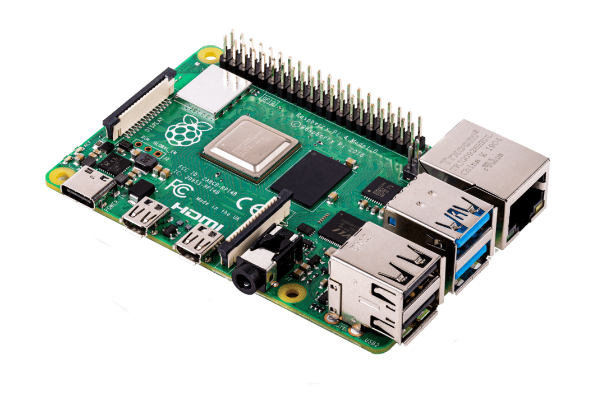
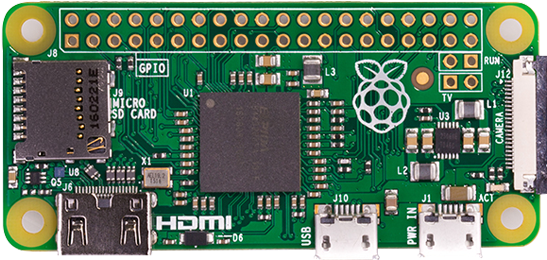

Raspberry Pi varijante
Raspberry Pi Zero – manja i jeftinija verzija Pi-a
Raspberry Pi 400 – Raspberry Pi ugrađen u tipkovnicu
Raspberry Pi 1/2/3/4 B – normalna varijanta Pi-a
Raspberry Pi 1/2/3 B+ – Malo jača verzija Pi-a B
Raspberry Pi 1/2/3 A i A+ – sličan kao Pi B i B+ varijante samo s manje povezanosti (USB, Wi-Fi, itd.)
Raspberry Pi 4:

Raspberry Pi Zero:

Osnovno o Raspberry Pi-u
Raspberry Pi je računalo otprilike veličine kreditne kartice.
Na njemu se koristi Linux operativni sustav.
Zbog male cijene i veličine pogodan je za robotiku, emulaciju starih videoigara ili kao jednostavno računalo.